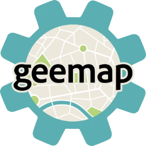
Earth Engine 的 Python 与 Jupyter 接口
不绑定商业云平台的交互式制图库
把 SAM 用到遥感影像分割上
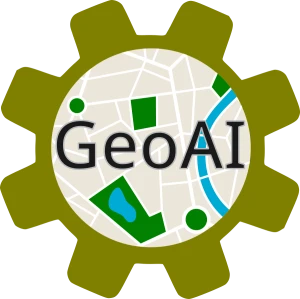
面向地理空间的深度学习工具集
人人可直接打开的完整 GIS 应用
为什么需要云原生地理空间
格式、协议与运行时的三重变化
GeoLibre 是什么
定位、技术栈、跨平台形态
核心能力与现场演示
七个真实案例，从数据加载到 AI 分割
开源项目的发展经验
开源如何真正推动技术普及
要看一个县的建筑物，先下载全国 40 GB 的压缩包；磁盘、带宽和时间在数据到手之前就先被消耗掉了。
Shapefile 的十字符字段名、编码问题、单文件 2 GB 上限，三十年后仍在日常消耗从业者的时间。
发布一张 Web 地图，需要 GeoServer、PostGIS、瓦片缓存和运维；对课题组和基层单位来说，这是一道硬门槛。
桌面 GIS 的安装、授权、版本与显卡驱动，在教学机房、政府内网和临时借用的电脑上都是真实的障碍。
数据静静躺在 S3 / GCS / Azure Blob 这样的静态存储上，没有任何 GIS 服务软件在跑。
HTTP 协议本身就允许"只要这个文件的第 1024 到 8192 字节"。这条二十多年前的老规范，是整套体系的地基。
文件内部预先分块并写好索引，客户端读几十 KB 的头就知道自己要的那一块在第几个字节。
三者合起来的效果：把一个文件本身变成了一个可以被随机访问的数据库。
于是"打开一份 100 GB 的数据集"不再意味着下载 100 GB，而是发出几十个 Range 请求、取回几 MB。
| 格式 | 替代的传统方案 | 关键机制 | 典型用途 |
|---|---|---|---|
| COG | GeoTIFF + 影像服务器 | 内部分块 + 多级金字塔概览 | 遥感影像、DEM |
| GeoParquet | Shapefile / File GDB | 列式存储 + 行组统计 + 空间边界 | 海量矢量、属性分析 |
| PMTiles | 瓦片目录 / 瓦片服务 | 单文件瓦片归档 + 内置目录索引 | 全球底图、矢量瓦片 |
| STAC | 各家自定义元数据 | 统一的 JSON 影像目录与检索 API | 影像发现与时序检索 |
| Zarr / Icechunk | 大 NetCDF / HDF 文件 | 分块多维数组 + 版本化事务 | 气象海洋、数据立方体 |
| FlatGeobuf | GeoJSON | 流式二进制 + 打包空间索引 | 中等规模矢量流式读取 |
| Apache Iceberg | 传统数据仓库表 | 表格式 + 清单元数据 + 快照 | 企业级空间数据湖 |
C / C++ / Rust 编译后在浏览器中以接近原生的速度运行。GDAL 级别的算法、完整的地理处理工具箱，第一次可以整体搬进标签页。
一个完整的分析型数据库跑在浏览器里，可以直接对远程 GeoParquet 执行空间 SQL，并且自动做列裁剪与行组裁剪。
渲染压力交给本机显卡。百万级要素的交互式渲染、点云、三维瓦片和栅格重投影都成为常态操作。
文件系统访问，让浏览器可以读本地大文件，甚至直接连接外置 GNSS 接收机。
打开网页就是可用状态，没有账号、没有配额、没有试用期。
没有 GeoServer、没有数据库、没有瓦片缓存，也就没有运维。
所有计算在本地完成，数据默认不离开浏览器，隐私与合规天然友好。
浏览器版零安装；需要更强能力时再装桌面端，两者界面完全一致。
云原生格式的即时打开、浏览器内的空间分析与 SQL、快速出图与分享、教学与轻量业务、嵌入到自己的系统里。
它不是要取代 QGIS 或 ArcGIS。第 15 页我会把两者的关系讲清楚，也会讲清楚差距在哪里。
MapLibre GL JS 负责矢量与栅格底图渲染，deck.gl 负责三维瓦片、点云、Gaussian splat 与大规模栅格叠加，两者共享同一个相机与同一个 WebGL 上下文。
DuckDB-WASM Spatial 读取绝大多数矢量格式并提供空间 SQL；geotiff.js 处理 COG 与多波段影像；专用渲染器处理 Zarr 与 NetCDF 数据立方体。
WebAssembly 地理处理运行时承载 1000 多个工具；Turf.js 提供轻量矢量算子；浏览器内 Pyodide 可运行 GeoPandas；桌面端可选 Python sidecar 提供 GDAL / rasterio。
Tauri v2 把同一个 React + TypeScript 前端打包成 Windows / macOS / Linux 桌面应用与 iOS / Android 原生应用，安装包体积远小于 Electron 方案。
web.geolibre.app
零安装，可作为 PWA 安装到桌面并离线运行。
Windows / macOS / Linux 安装包，另有 Mac App Store、Homebrew、winget、AUR、Flatpak 渠道。
App Store（iOS）与 Google Play（Android）上的原生应用，由同一代码库经 Tauri v2 构建。
pip install geolibre
以 anywidget 形式把整个应用嵌进 Notebook，工程状态双向同步。
geolibre R 包，用于 RStudio、Quarto、R Markdown 与 Shiny。
iframe 嵌入 + 版本化 postMessage API + 类型化客户端；Docker 私有部署。
.geolibre.json，可以进版本库、可以被脚本生成、可以被 AI 撰写，不锁定任何人。QGIS 是专业相机：成熟、强大、可扩展。GeoLibre 更像手机相机：轻便、随手可得、拍完即可分享。手机相机没有取代专业相机，但它让"拍照"的参与人数增加了几个数量级。
插件生态的深度、几十年积累的专业工具、投影与拓扑的边缘情况、超大工程的稳定性，QGIS 仍然明显领先。
GeoLibre 可直接导入 QGIS 工程（.qgs / .qgz）与 ArcGIS Pro 工程（.aprx / .mapx），保留图层、分组、样式与视图。
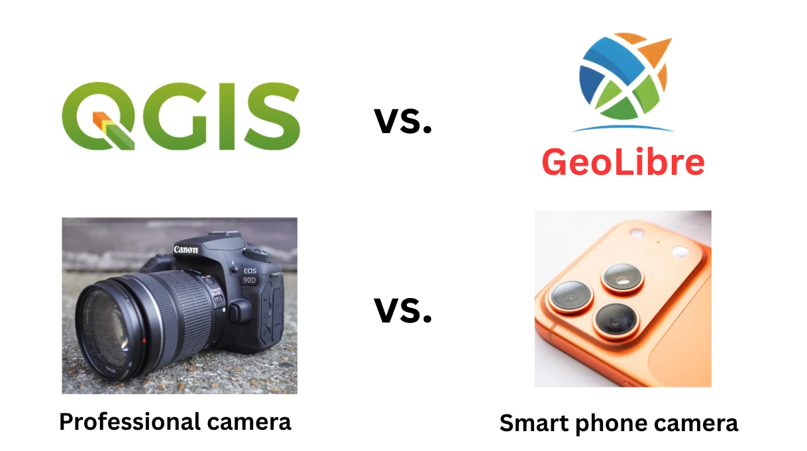
把本地 GeoPackage、Shapefile、GeoParquet、FlatGeobuf、KML/KMZ、GPX、CAD 图纸或 OSM PBF 直接拖到地图上，由 DuckDB-WASM Spatial 在浏览器内解析并统一重投影到 WGS84。
排序、筛选、多选高亮、字段计算器、虚拟字段（表达式驱动的计算列）、属性连接、编辑者追踪，以及内置的直方图、散点图、箱线图与字段统计面板。
单一、分类、分级、表达式与规则五种渲染器，比例符号、热力图、聚类、图表符号；图例根据符号系统自动生成；样式可导入导出为 SLD、QML 或 Mapbox 样式 JSON。
GeoEditor 插件支持拓扑式多边形绘制（与邻居共享边界，不留缝隙或重叠），可以把当前视窗内的要素拉进编辑器，改完写回原始来源，包括 GeoPackage、GeoJSON 与 PostGIS 表。
GeoParquet 是列式存储。只渲染建筑高度，就只读高度和几何两列，其余几十列的字节根本不会被传输。
每个行组自带空间边界与统计值。DuckDB 先读元数据，把与当前视窗不相交的行组整块跳过。
剩下的行组按字节区间用 Range 请求取回，解压、解码、渲染，全部在浏览器内完成。
决定性能的不是数据集的总体积，而是当前视窗内的要素数量和你选中的列数。
这就是"100 GB 级数据集实时流式渲染"能够成立的全部原因，没有任何魔法。真正的上限是浏览器标签页的内存，它约束的是同时驻留内存的要素数量，而不是数据集大小。
Overture Maps 的全球建筑物、道路、地名与行政区划主题，以及 Source Cooperative 上的开放 GeoParquet 数据集，均以云原生格式直接托管在对象存储上。
打开 Overture 插件 → 选择建筑物主题 → 缩放到一座城市 → 要素随视窗流入 → 打开网络面板，看到的是一串 Range 请求，而不是一次整体下载。
切到 SQL 工作区，对同一个远程 GeoParquet 直接写空间 SQL：按面积筛选、与另一图层做空间连接、聚合统计，结果一键加为新图层。
DuckDB Spatial（默认）、PGlite 提供的浏览器内 PostGIS、以及 Apache Sedona，在同一个面板里切换。还支持 Apache Iceberg 表。
传统矢量瓦片要么是几百万个小文件，要么需要一台瓦片服务器。PMTiles 把整个金字塔装进一个文件，内置目录索引，客户端用 Range 请求直接取某一块瓦片。
一个全球底图可以放在 CDN、对象存储甚至 GitHub Pages 上，零运维、可无限并发、按流量计费而不是按服务器计费。
矢量瓦片本地没有完整要素，样式面板会采样当前视窗已加载的要素填充字段与取值范围，因此分类、分级设色与三维拉伸依然可用。
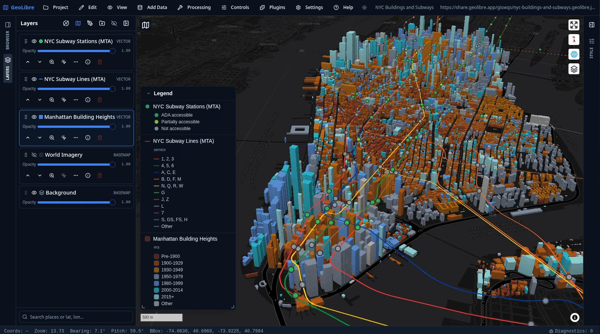
曼哈顿建筑轮廓按建成年代三维拉伸并分类着色，MTA 地铁线路与站点叠加其上，图例完全由图层符号系统自动生成。
Time Slider 沿建成年份从 1850 走到 2025，曼哈顿按年代逐层长出来。时间轴不仅驱动 GeoJSON，也驱动矢量瓦片、PMTiles、COG 序列与 Zarr 立方体。
真实的分享链接：share.geolibre.app/giswqs/nyc-buildings-and-subways
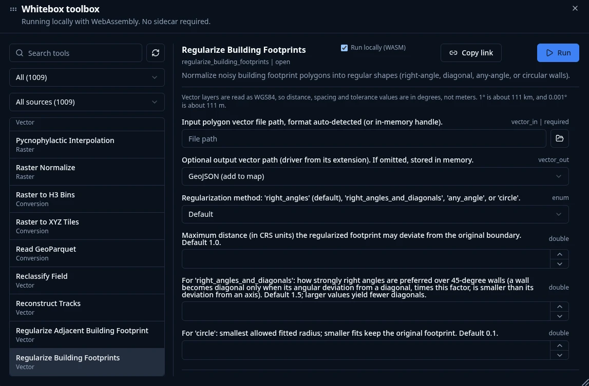
| 类别 | 工具数 | 代表工具 |
|---|---|---|
| 矢量 | 313 | 叠加、缓冲、连接、拓扑、综合化 |
| 栅格 | 256 | 代数、滤波、重分类、分区与邻域统计 |
| 遥感 | 154 | 光谱指数、波段运算、分类、变化检测 |
| 水文 | 100 | 洼地填平、流向、汇流累积、流域划分 |
| 地形 | 99 | 坡度、坡向、山体阴影、曲率、通视 |
| LiDAR | 65 | 点云滤波、地面点分类、DEM/DSM 生成 |
| 格式转换 | 49 | 转 GeoParquet、PMTiles、COG |
| 网络分析 | 26 | 连通性、成本距离、路径分析 |
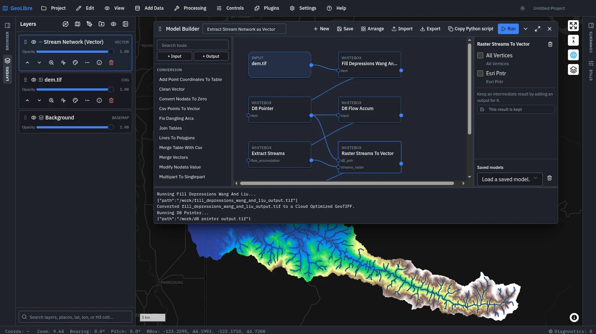
dem.tif → 洼地填平 → D8 流向 → 汇流累积 → 河网提取 → 栅格转矢量，一次运行得到矢量河网图层把工具拖成节点，一个工具的输出接到下一个的输入；中间结果可按需保留为输出。
环路、缺失连接、参数类型不匹配都在运行前报出。模型可保存复用、导入导出，也可一键复制为等价 Python 脚本。
用自然语言描述流程，AI 生成一张已校验的模型图，人审阅后再执行。全程 WebAssembly，无服务器参与。
影像 uc_berkeley.tif，模式选文本提示，模型 facebook/sam3.1，提示词只写了一个词 building，置信度阈值 0.5，一次返回 375 个建筑物要素。
文本提示（"trees"、"buildings"）、在地图上点前景与背景点、拖一个框做"找相似"，以及 SAM 2 的全自动掩膜生成。
分割结果是带 score 置信度字段的 GeoJSON 图层，能进属性表、能继续做叠加分析、能导出。模型推理由单独的 samgeo-api 服务承担（建议 GPU），是本场唯一需要外部服务的演示。
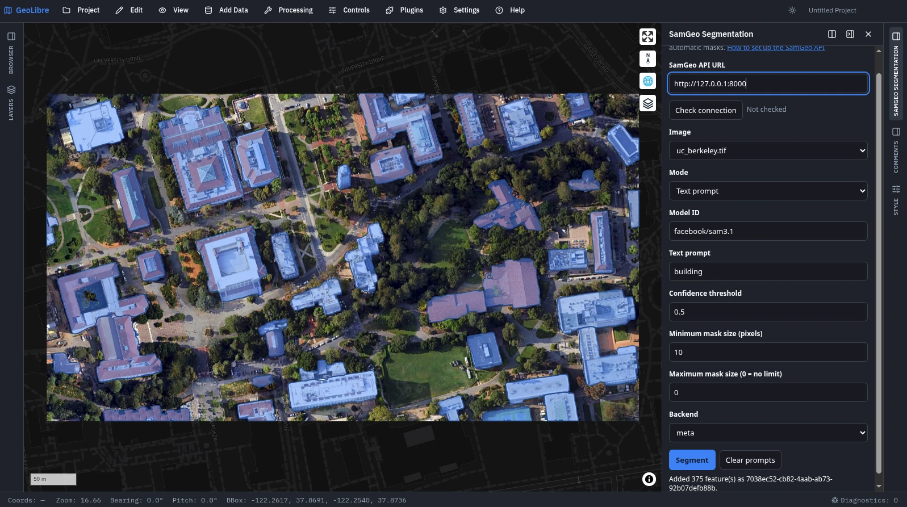
building 提示词分割出的 375 个建筑物，蓝色为掩膜DuckDB 空间 SQL 直接查询已加载图层、本地文件与远程 URL，带表名列名自动补全、示例查询与查询历史，结果可加为图层或导出。
除 DuckDB Spatial 外，浏览器内还可选 PGlite（PostGIS）与 Apache Sedona 引擎；支持 Apache Iceberg 表，CRS 从 schema 读取，行数按清单元数据先行报告。
每一次工具运行都被记录，可一键重跑，也可以直接复制等价的 Python 代码，交给 Notebook 面板或 JupyterLite 批量执行。
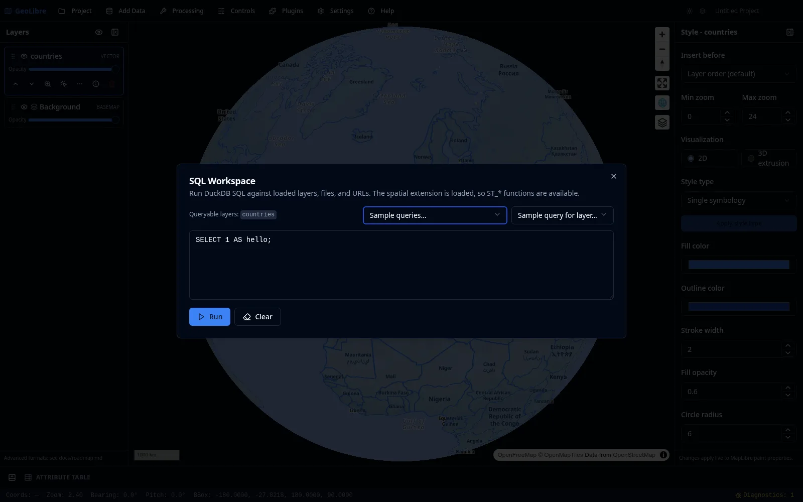
卷帘对比、时间轴、H3 与 DGGS 网格、高程剖面、路径规划、街景与 Mapillary、大气与深空效果、飞行模拟器、地图录制。
STAC 目录与 API、NASA Earthdata GIS、Planetary Computer、Overture Maps、Source Cooperative、Hugging Face、Natural Earth、GeoLens。
GeoEditor 拓扑编辑与建筑体量、USGS LiDAR 裁剪、SamGeo 影像分割、GeoAgent。
注册右侧面板、工具栏菜单与浮动面板；直接使用宿主的 deck.gl 实例与 Zarr 渲染器；只读查询宿主已加载图层的要素，而不必重新拉取和解析一遍数据源。
plugin.json 清单、zip 安装（桌面与网页均可）、构建内置的 drop-in 目录，以及 plugins.geolibre.app 上的插件注册表，支持版本检查与一键更新。
整个工程导出成一个离线可用的 HTML 文件，双击即开，不需要服务器与网络。发给领导、评审或学生，就是一个附件。
上传前逐个探测工程引用的数据源，把接收方打不开的列出来并说明原因（需要凭据、缺少跨域头、链接失效、指向本地路径）。它只提示，不阻止。
maponly 纯地图、layout=viewer 只读、?data= 与 ?style= 深链、?tool= 直达工具，再加上版本化 postMessage API。
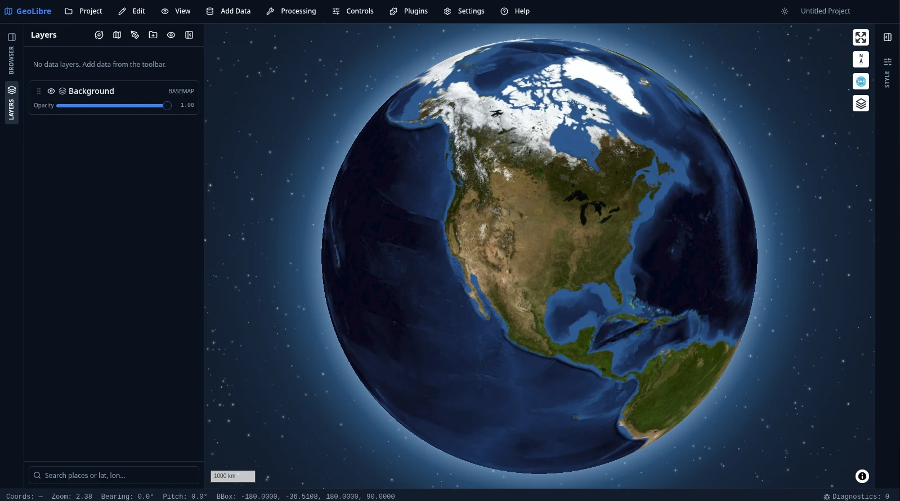
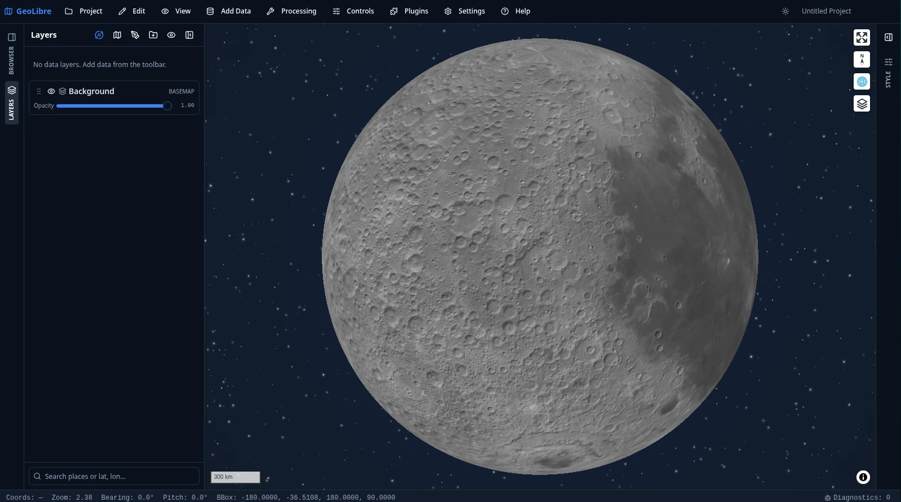
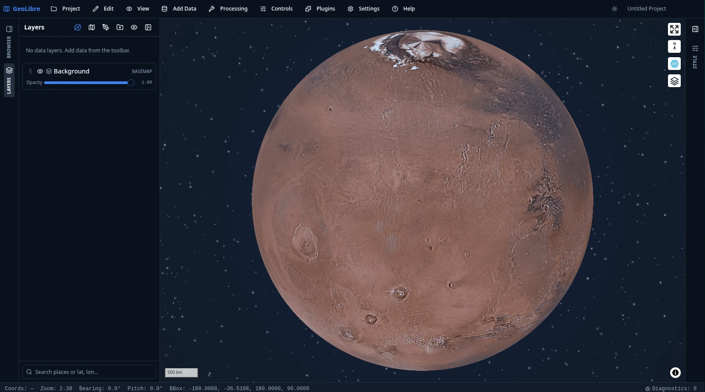
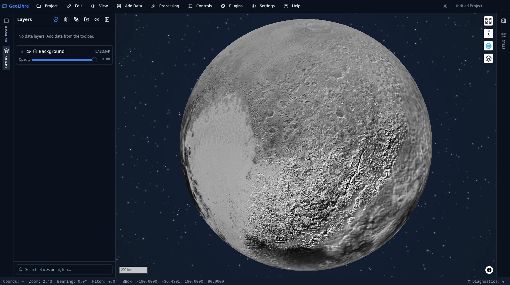
覆盖月球、火星、水星、金星、木卫二 / 三 / 四、土卫六、冥王星与卡戎，数据来自 OpenPlanetaryMap 与 USGS Astrogeology。
每个工程携带自己的椭球体参数，因此距离、面积与比例尺量测与所测天体一致。底图、投影和量测都是可配置的，而不是把地球写死在代码里。
一条命令起一个浏览器版容器，可选 HTTP Basic Auth。GEOLIBRE_SHARE_URL 与 GEOLIBRE_COLLAB_URL 在容器启动时把分享与协作指向自建服务器，设为 off 则彻底移除分享入口。
GEOLIBRE_NO_EXTERNAL_CDN=1 会剥离全部外部 CDN 依赖，把少数确实需要远程主机的功能提前明示，而不是运行到最后才失败。
为特定部署裁剪可见的菜单、面板与数据源，把一个通用 GIS 收敛成面向某项业务的精简界面，不需要改代码或维护分支。
可安装为 PWA 并离线运行，"下载离线区域"预缓存当前视窗底图瓦片；18 套完整翻译目录，含简体中文，阿拉伯语与波斯语为完整镜像的从右到左界面。
把 Earth Engine 接进 Python 与 Jupyter。
降低一个既有强大系统的使用门槛，本身就是巨大的价值。
不依赖任何商业云平台的交互式制图库。
不要把用户锁在单一后端上。
把 SAM 用到遥感影像分割上。
通用模型进入垂直领域时，接口比模型更决定采纳率。
把以上所有经验做成一个可以直接打开的应用。
当"安装"这一步被去掉，使用者的数量级会变。
提 issue、报告 bug、提功能需求。真实使用场景的描述，往往比一个补丁更有价值。
界面已有完整简体中文翻译，术语的准确性仍需要国内同行把关，这是最容易上手也最见效的贡献。
按 plugin.json 契约写一个插件，完全不需要改主仓库代码，也不需要等待合并。
零安装意味着机房、临时电脑和学生自带笔记本都不再是障碍，一个链接就能开始上课。
内网 Docker 部署 + UI Profiles 裁剪界面，可以低成本地在一个具体业务里先跑起来。
GitHub Sponsors。项目是 MIT 协议，赞助支持的是持续开发、托管与跨平台分发。
云原生格式让"打开一份 100 GB 的数据"变成一件几秒钟的事，代价只是几十个 HTTP Range 请求。
WebAssembly 与 DuckDB 让完整的空间分析能力进入浏览器，数据无需离开本机，隐私与效率同时成立。
GeoLibre 把这两件事做成了一个免费开源、跨平台、零安装、可分享的应用，今天就可以打开使用。
零安装的教学环境、可引用的开源工具、可复现的 Notebook 工作流。
内网可部署、数据不出本机、界面可裁剪、可嵌入既有系统，MIT 协议无商用限制。
网页版 web.geolibre.app
文档 geolibre.app
源码 github.com/opengeos/GeoLibre
示例 share.geolibre.app
Python pip install geolibre
插件 plugins.geolibre.app
协议 MIT
引用 doi.org/10.5281/zenodo.20785400